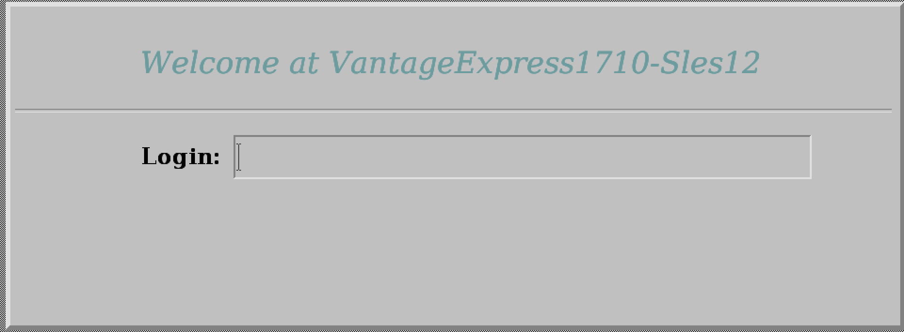

Getting Started with Teradata Vantage on Your Local Machine Using VirtualBox
Overview
This how-to shows the quickest way to gain access to a Teradata database by running it on your local machine. There are many ways to install Teradata. This document optimizes for the lowest time to first query without spending money on cloud resources. Once you finish the steps you will have a working Teradata Vantage Express database on your computer.
Prerequisites
-
A computer using one of the following operating systems: Windows, Linux or MacOS.
-
30GB of disk space and enough CPU and RAM to be able to dedicate at least one core and 4GB RAM to the virtual machine.
-
Admin rights to be able to install and run the software.
Installation
Download required software
-
Teradata Express for VMware Player. If you have not used the Teradata downloads website before, you will need to register.
-
You can also install VirtualBox using brewand other package managers.
Run Teradata Vantage Express
-
Go to the directory where you downloaded Teradata Vantage Express and unzip the downloaded file.
-
Copy VE.vbox file to the directory where you unzipped Vantage Express.
-
Double-click on the
VE.vboxfile. This will start the VM image in VirtualBox. -
Once the VM is up, you will see its desktop environment. When prompted for username/password enter
rootfor both. -
The database is configured to autostart with the VM. To confirm that the database has started go to the virtual desktop and start
Gnome Terminal. In the terminal execute:pdestate -aIf the database is up and running you will see:
PDE state is RUN/STARTED. DBS state is 5: Logons are enable - The system is quiescent
If the database is still starting, the DBS state will be less than 5. Rerun
pdestate -ato get the latest state. -
Go back to the virtual desktop and launch
Teradata Studio Express. When you first start it you will be offered a tour. Once you close the tour, you will see a wizard window to add a new connection. SelectTeradata:
-
On the next screen, connect to the database on your localhost using
dbcfor the username and password:
Run sample queries
-
We will now run some queries in the VM. To avoid copy/paste issues between the host and the VM, we will open this how-to in the VM. Go to the virtual desktop, start Firefox and point it to this how-to.
-
Once in Teradata Studio Express, go to
Query Developmentperspective (go to the top menu and selectWindow→Query Development). -
Connect using the previously created connection profile by double-clicking on
Database Connections→New Teradata. -
Using
dbcuser, we will create a new database calledHR. Copy/paste this query and run it by hitting the run query button ( ) or pressing F5 key:
) or pressing F5 key:CREATE DATABASE HR AS PERMANENT = 60000000, -- 60MB SPOOL = 120000000; -- 120MB -
Let’s create a sample table and insert some data and query it. We will first create a table to hold employee information:
-- TODO: We need to come up with original queries. The ones below came from -- TODO: https://www.tutorialspoint.com/teradata/teradata_create_table.htm CREATE SET TABLE HR.Employee ( EmployeeNo INTEGER, FirstName VARCHAR(30), LastName VARCHAR(30), DOB DATE FORMAT 'YYYY-MM-DD', JoinedDate DATE FORMAT 'YYYY-MM-DD', DepartmentNo BYTEINT ) UNIQUE PRIMARY INDEX ( EmployeeNo ); -
Now, let’s insert a record:
INSERT INTO HR.Employee ( EmployeeNo, FirstName, LastName, DOB, JoinedDate, DepartmentNo ) VALUES ( 101, 'Mike', 'James', '1980-01-05', '2005-03-27', 01 ); -
Finally, let’s see if we can retrieve the data:
SELECT EmployeeNo,FirstName,LastName FROM HR.Employee;You should get the following results:

Summary
In this guide we have covered how to quickly create a working Teradata environment. We used Teradata Vantage Express in a VM running on VMware. In the same VM, we ran Teradata Studio Express to issue queries. We installed all software locally and didn’t have to pay for cloud resources.